Yiwen Shao
Senior Researcher · Tencent HY Multimodality (Speech) (Bellevue)
I am a Senior Researcher at Tencent HY Multimodality (Speech) (Bellevue), leading Audio Encoder and Representation Learning research for Hunyuan ASR & Conversation. Before that, I was a Senior Researcher at Tencent AI Lab (Bellevue), advised by Dr. Dong Yu, where I contributed to the initial launch of Hunyuan ASR & Conversation, led the Speech & Audio Understanding part of the native multimodal model project, and built the open-source framework Auden.
Previously, I was a Ph.D student from the Center for Language and Speech Processing (CLSP) at Johns Hopkins University, advised by Dr. Daniel Povey and Dr. Sanjeev Khudanpur, where I worked primarily on Automatic Speech Recognition (ASR) and related topics. I got my Bachelor's degree from the School of Electronic Science & Engineering at Southeast University in 2017.
I am passionate about open-source software and believe in making research accessible to the broader community. Here are some of the research toolkits and systems I have developed or contributed to:
-
Auden
(2025–present)
– Comprehensive toolkit for audio foundation models. (Lead Developer)
-
IBM Adversarial Robustness Toolbox
(2021)
– Library for adversarial machine learning. (Contributor of ASR modules.)
-
PyChain
(2020)
– PyTorch implementation of lattice-free MMI for end-to-end ASR with fully parallelized cuda kernels. (Lead Developer)
-
Espresso
(2019)
– End-to-end neural speech recognition toolkit built on Fairseq. (Contributor)
-
Kaldi
(2017)
– Speech recognition toolkit with extensive training recipes. (Contributor)
- Speech & Audio
- Large Audio-Language Models
- Representation Learning
Updates
- 2026-03 Gave a talk at Conversational AI Reading Group at Mila on “Auden: From Audio Encoders to LALMs”
- 2026-01 1 paper accepted by CVPR 2026
- 2026-01 3 papers accepted by ICASSP 2026
- 2026-01 Released 1 technical report (first authored) on Speech-LLM
- 2025-12 Open-sourced Auden, a toolkit for building audio foundation models
- 2025-12 Will present 1 paper at ASRU 2025. See you in Hawaii!
- 2025-11 1 paper accepted by AAAI 2026
- 2025-05 2 papers accepted by Interspeech 2025
- 2024-09 Joined Tencent AI Lab (Bellevue) as a Senior Research Scientist.
- 2024-09 2 papers (1 first authored) accepted by SLT 2024
- 2024-06 2 papers (both first authored) accepted by Interspeech 2024
- 2023-12 1 paper accepted by ICASSP 2024
- 2023-12 Gave a talk at JHU CLSP Seminar:
- 2022-07 2 papers (1 first authored) accepted by Interspeech 2022
- 2022-01 1 paper (first authored) accepted by ICASSP 2022
Recent Works
* equal contribution, † corresponding author or industry lead
SPEECH & MULTIMODAL LLMS
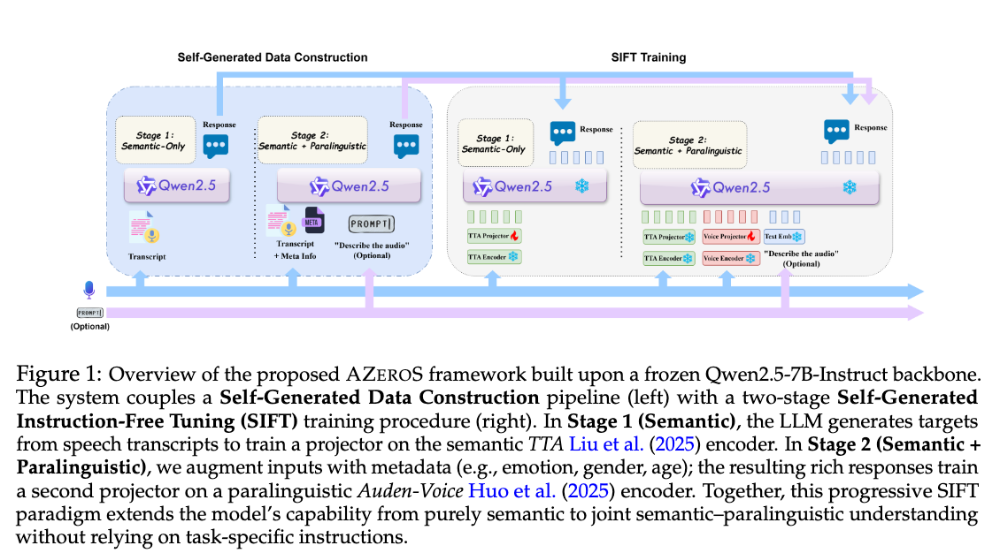
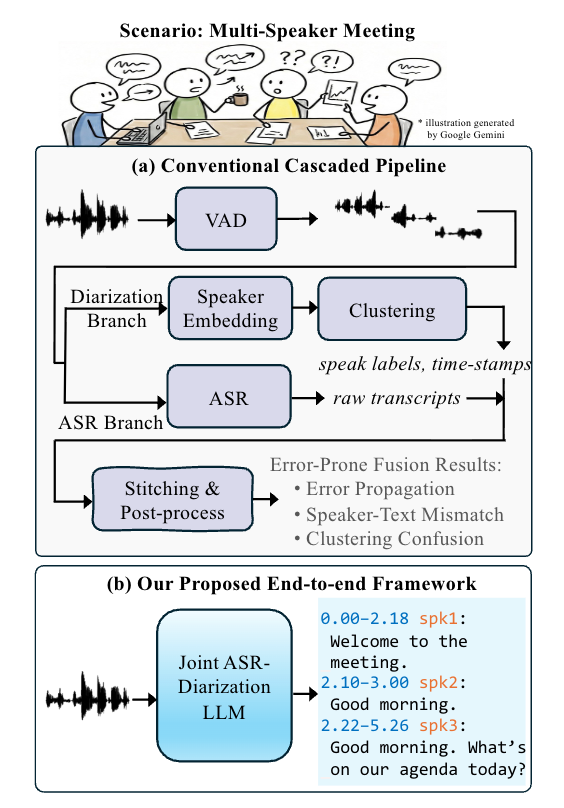
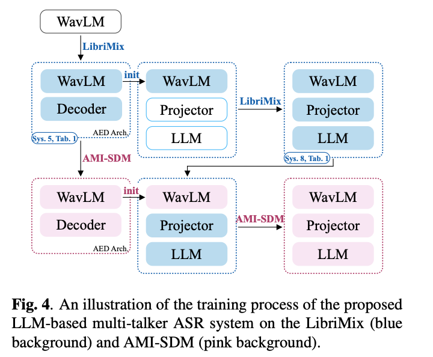
AUDIO ENCODERS/TOKENIZERS
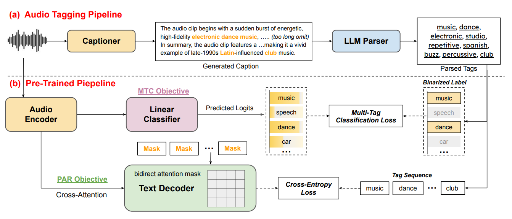
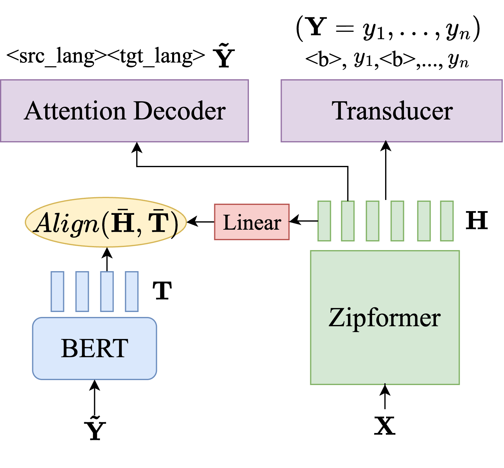
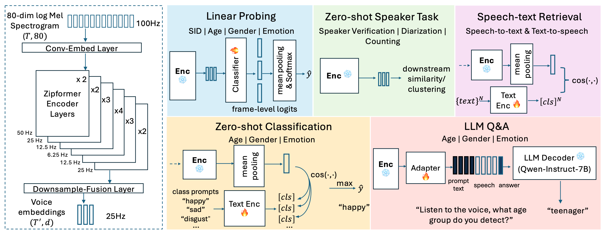
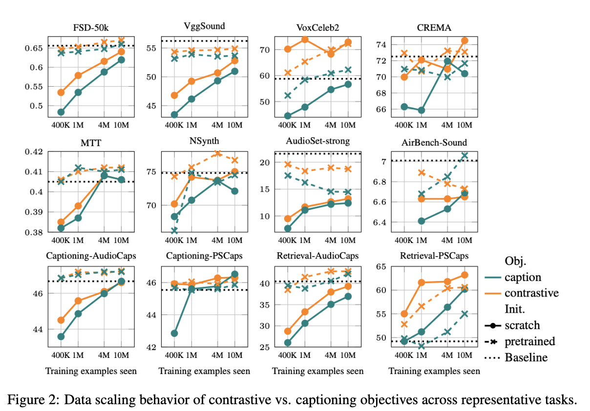
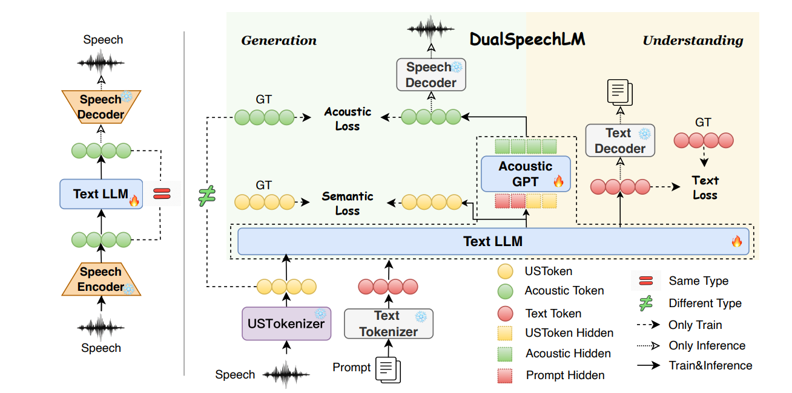
ASR
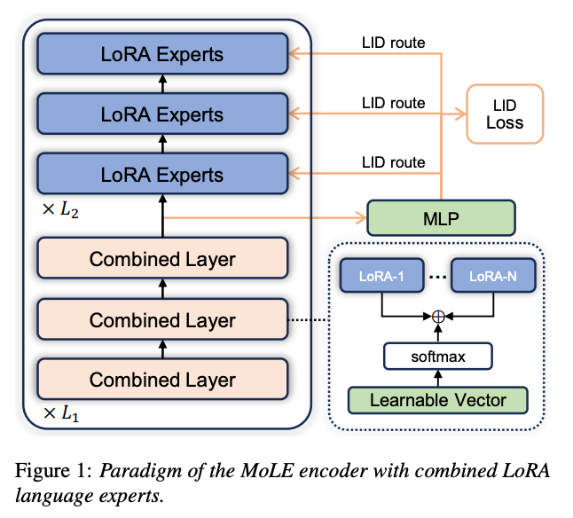
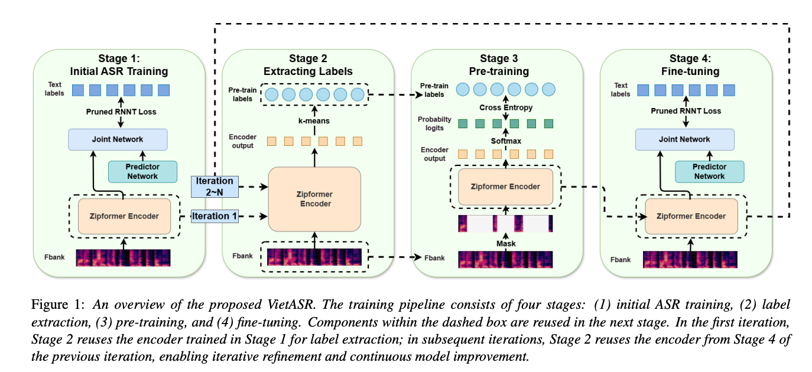
Selected Publications
* equal contribution
ASR
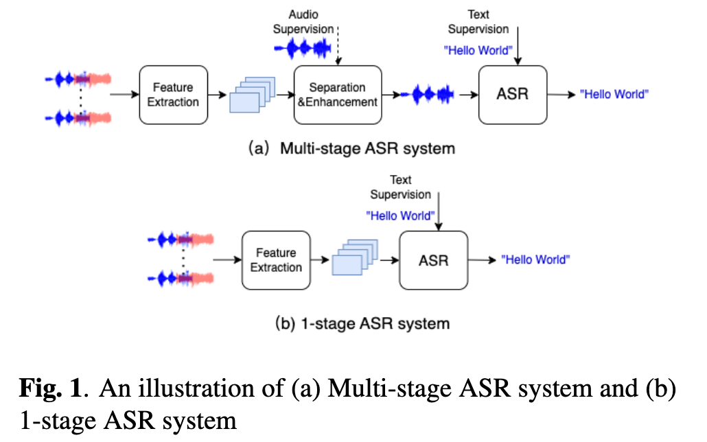
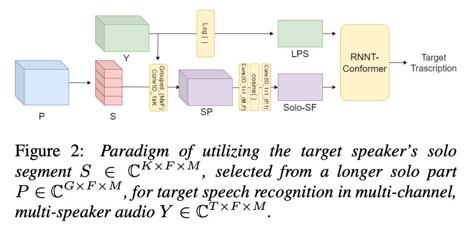
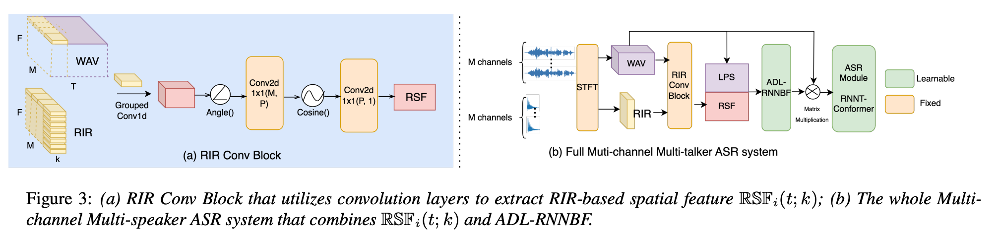
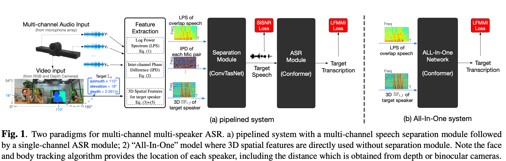
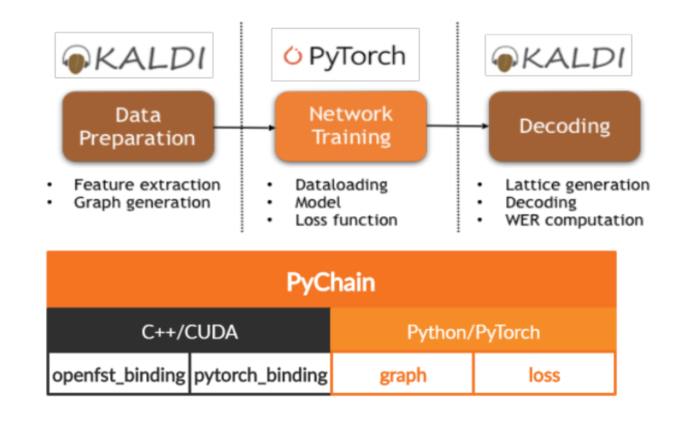
Experience
Contact
I am happy to discuss research collaborations, internships, or anything related to speech, audio, and multimodal AI.